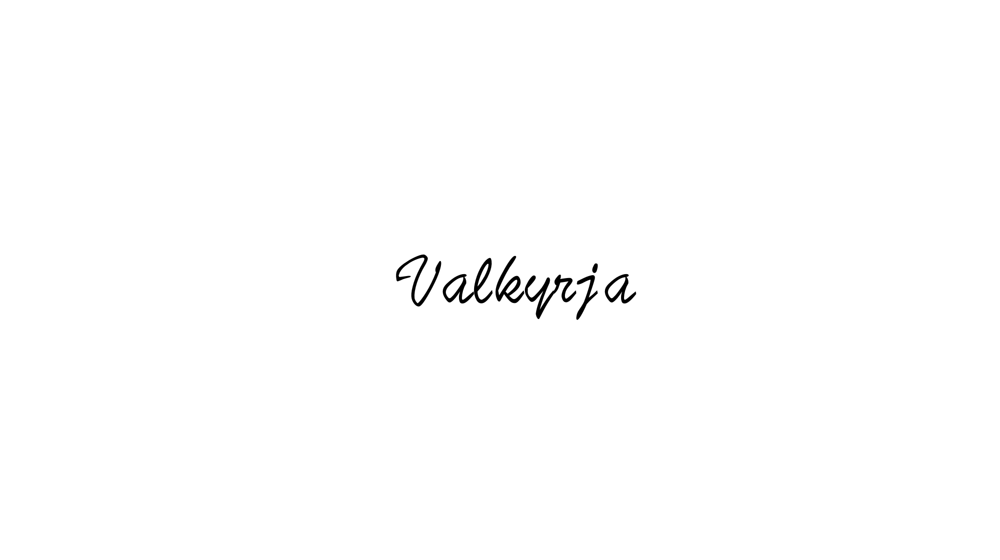

Biography
慶應義塾大学大学院理工学研究科修士1年 川野恭史(Yasufumi Kawano)です．
CVを専攻しており，Active Learningや，Action Recognitionについて研究を行なっています．
趣味で 競プロ(AtCoder) や， 競馬AI の作成をしています．
興味を持ってくださったら，遠慮なく連絡してください．
I am a First-year master's student at Keio University, majoring in computer vision.
My research interests are machine learning and Computer Vision (Active Learning, Action Recognition).
If you are interested in me, please don't hesitate to Contact me.
-
Interests
・Computer Vision
・Machine Learning
・Image Recognition
・Active Learning
・Semantic Segmentation
-
Educatiion
・Graduate School of Keio University, 2021 -
・Keio University, 2017 - 2021
Products
Experience
Publications
Domestic Conference
・川野恭史，原 健翔，青木義満，片岡 裕雄，遷移行動認識による行動予測，ビジョン技術の実利用ワークショップ2021(ViEW2021)
・川野 恭史，野田 祥希，望月 凜平，青木 義満，Active Learningにおける不確実サンプル選択によるアノテーション効率化，第27回画像センシングシンポジウム(SSII 2021)
・川野 恭史，野田 祥希，望月 凜平，青木 義満，Active Learningにおける不確実サンプル選択によるアノテーション効率化，動的画像処理実利用化ワークショップ2021(DIA 2021)
Recognition
Contact
-
〒223-8522
神奈川県横浜市港北区日吉3-14-1
慶應義塾大学理工学部
電気情報工学科 青木研究室e-Mail: ykawano[at]aoki-medialab[dot]jp
-